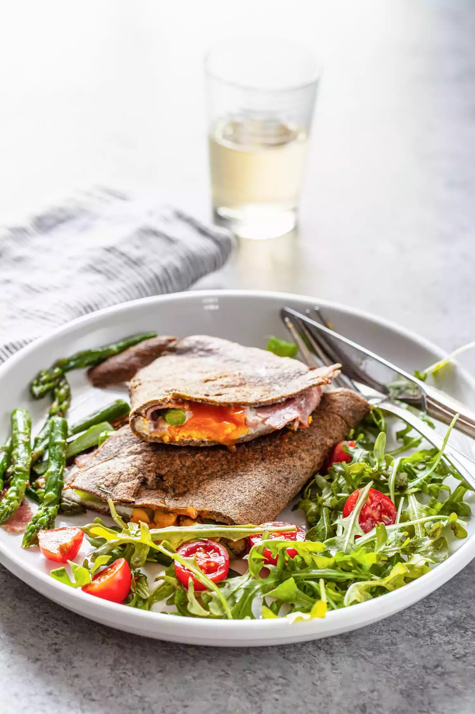
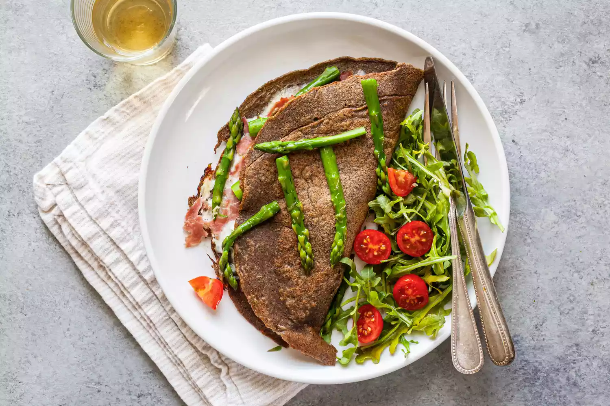
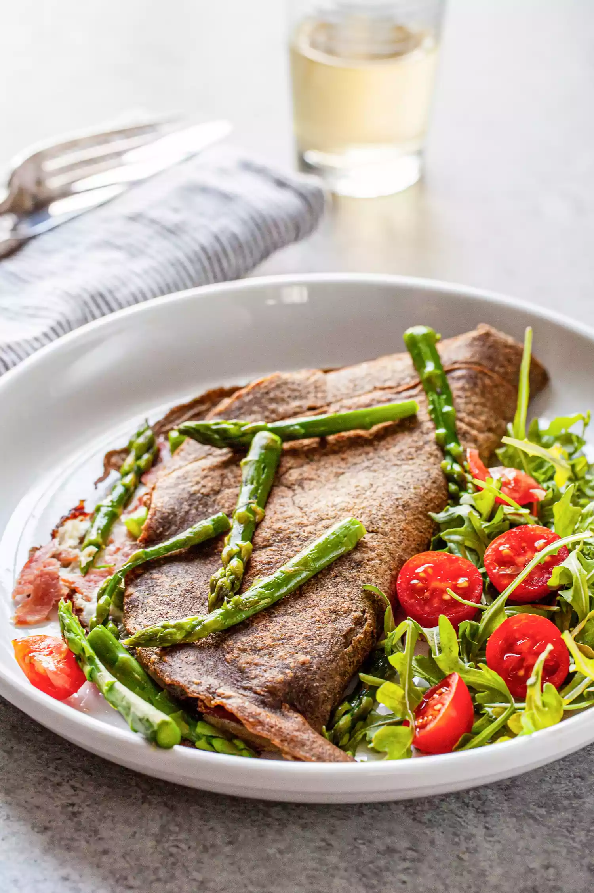

|  |
I first experienced buckwheat crepes at the Breizh Café, a famous creperie in Paris that specializes in crepes from Britany in the Northwest corner of France. The batter, made only with eggs, buckwheat flour, water, and salt, is thin and earthy tasting, with beautiful brown, lacy edges when cooked. While you can fill it with a myriad of fillings, a crepe filled with ham and cheese and topped with an egg, called Galette Complète, is the legendary Breton crepe and makes a substantial meal for lunch, brunch, or any time of day you have an itch to travel without getting on a plane. I've taken a few liberties here in making this famous crepe. For a touch of green, I've added asparagus, and for ease, I've provided instructions for a half-moon shaped crepe instead of the traditional square. If you're feeling confident don't let that hold you back; make the crepes in a square—instructions are provided for you at the end of the recipe. |
A Simple, Make-Ahead Crepe BatterMost crepes are made of a simple, thin batter of water or milk, flour, eggs, and salt, and sometimes butter. There is no leavening involved and the batter is much thinner than pancake batter, so it glides across a hot pan in a thin layer, just the right thickness to give the filling its due. Adding a little sparkling water to the batter aerates it with tiny bubbles. The batter is quick and easy to make; just whisk all the ingredients in a bowl and let sit for 1 hour so the flour can become fully hydrated. Sizes range from tiny 4-inch rounds to 12-inch or larger crepes, suitable for an appetizer, a mini dessert, or a filling meal. Commonly, crepes are made with wheat flour, but these Crepes Bretonnes are made with buckwheat flour. |
 |
|  |
Tips for Making the Perfect Crepes
|